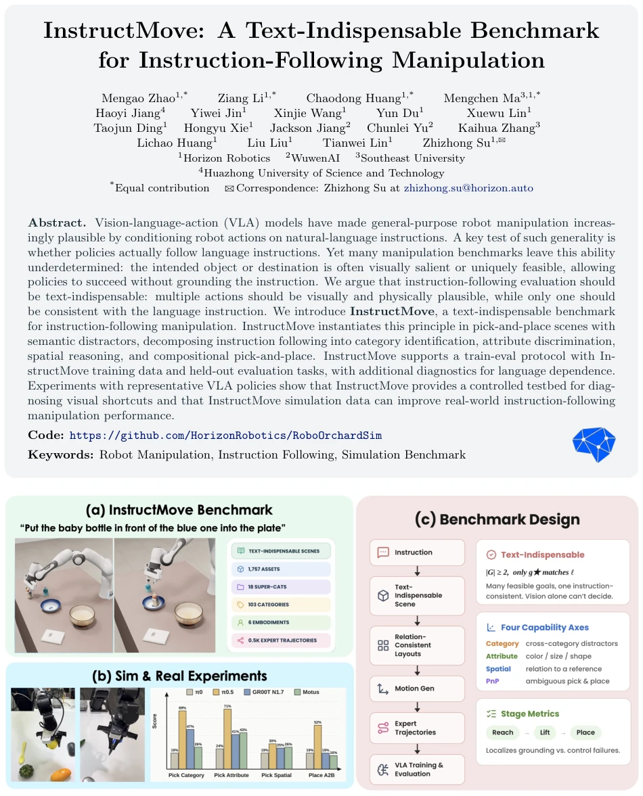
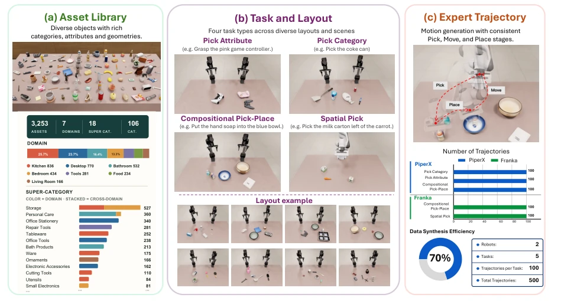
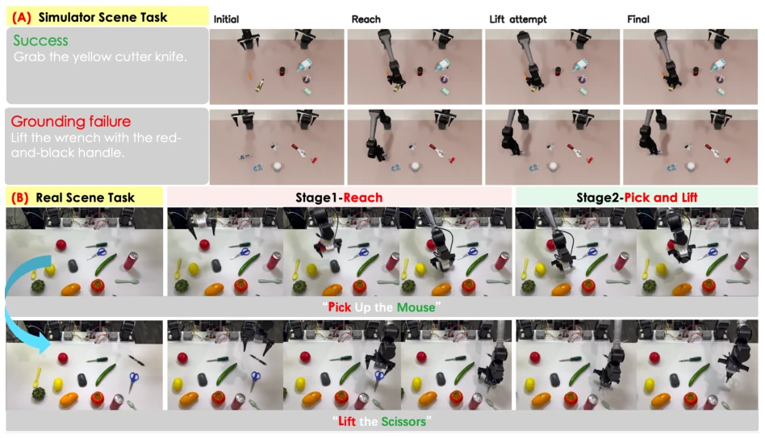
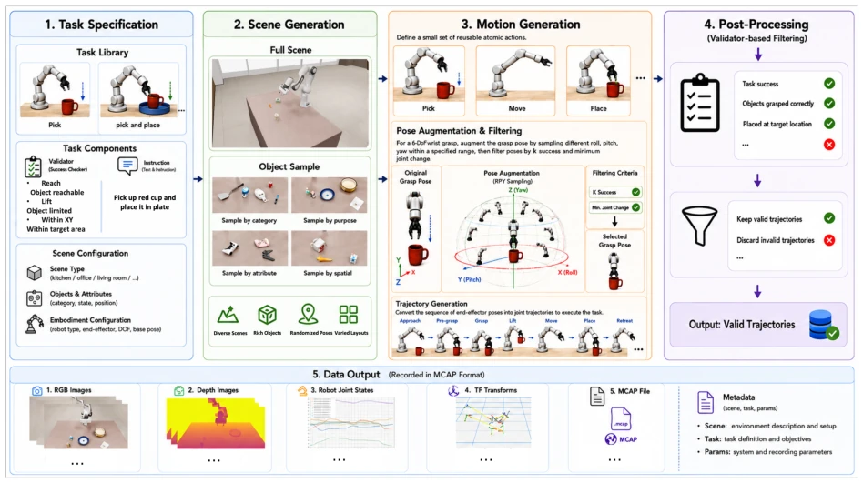
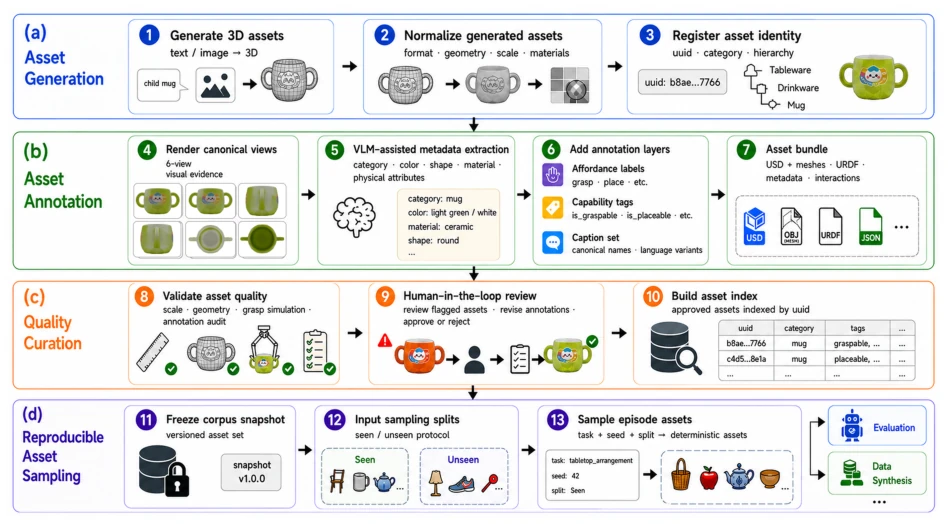
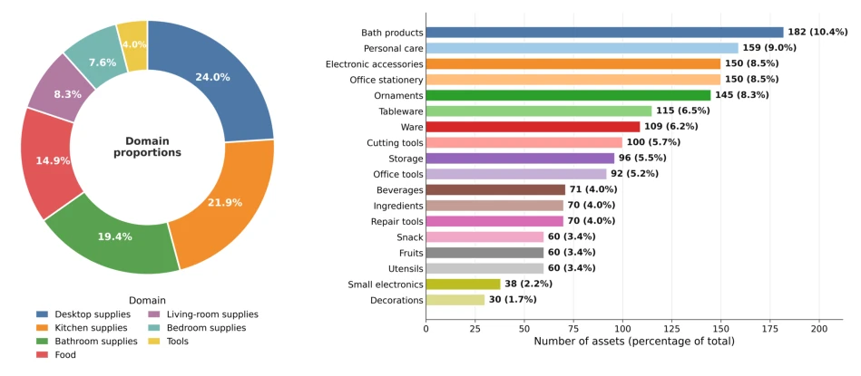
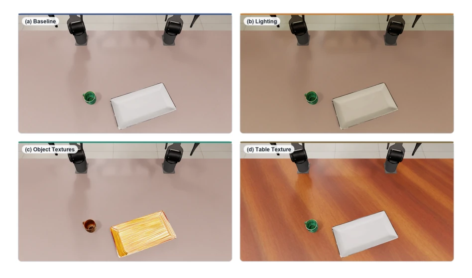
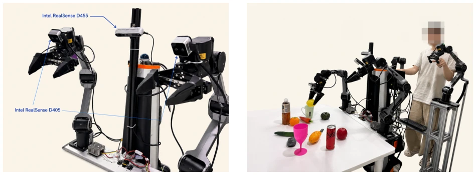
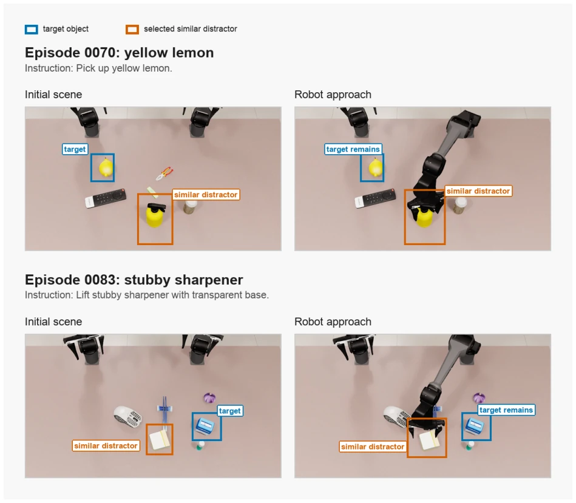

The name InstructMove is quite striking, with its core principle being simple: do not rely solely on visual cues to guess actions, but rather listen to human language. This paper serves as a "litmus test" for VLA models, specifically targeting strategies that take shortcuts via visual cues. In most existing benchmarks, target objects are too conspicuous, allowing robots to guess correctly by chance; InstructMove forcibly introduces semantic distractors, making language the sole solution. However, this evaluation remains limited to basic operations like pick-and-place, which is somewhat elementary for long-horizon tasks or complex interactions. Furthermore, although sim-to-real transfer shows some effect, whether it can fully represent real-world performance remains questionable. Additionally, while the separation of training and test sets is beneficial, fine-tuning on specific tasks may lead to overfitting, masking the model's true generalization ability. Overall, it is a useful diagnostic tool, but do not expect it to dominate the field; future performance depends on long-horizon tasks.
The core promise of current VLA models is that natural language can dictate action selection, yet existing benchmarks often suffer from "visual shortcuts". For instance, in benchmarks such as RLBench [10] or CALVIN [5], target objects in the scene are often visually salient or the only feasible option, allowing strategies to succeed without understanding the language. This reduces instructions to auxiliary labels rather than necessary grounding signals. Although LIBERO-CF [4] notes that strong VLA strategies may follow visual priors, it did not systematically construct scenarios where language is indispensable within the benchmark. InstructMove aims to address this issue by ensuring multiple actions are physically feasible, with only one matching the language instruction, thereby exposing whether strategies truly rely on text. If a strategy fails this test, the so-called "instruction following" may merely be a byproduct of visual salience rather than true semantic understanding.

Figure 1: InstructMove is a text-indispensable benchmark for instruction-following manipula- tion. When a scene makes the target obvious, the correct pick-and-place action can be inferred from vision alone, reducing the instruction to a task identifier. InstructMove instead introduces semantic distractors— objects and destinations that are visually plausible and physically feasible, yet are disambiguated by the instruction—making language necessary for action selection.
The overall pipeline is built upon NVIDIA Isaac Lab, divided into three components: an asset library, a task layout library, and expert trajectory synthesis. The asset library contains 3000+ objects and supports semantic attribute annotation. The task library defines four types of scenarios: Pick Category (cross-category recognition), Pick Attribute (same-category attribute distinction), Pick Spatial (spatial relationship reasoning), and Compositional Pick-Place (combinatorial operation). A constraint layout engine ensures target uniqueness. The evaluation protocol adopts a train-eval mode with separated training and test sets. Regarding metrics, in addition to the final success rate, phased metrics (Reach, Lift, Place) are introduced to distinguish between grounding failures and control failures. Furthermore, a counterfactual language diagnosis is designed; by modifying instructions, it tests the strategy's dependence on language to prevent visual shortcuts from interfering with evaluation. Data generation employs VLM-assisted annotation to ensure attribute accuracy. The entire pipeline emphasizes semantic and spatial consistency, ensuring that each scene contains multiple physically feasible targets but only one matches the instruction, thereby forcing the model to learn language grounding.

Figure 2: Overview of the InstructMove benchmark instantiation pipeline. The benchmark is built through three aligned components: a validated asset library, task templates with constraint-based scene/layout gen- eration across four task families, and expert trajectory synthesis for generating training demonstrations.
Experiments evaluated four strategies: π0, π0.5, GR00T N1.7, and Motus. In post-training evaluation, π0.5 performed strongest in semantic localization (Reach), though the Lift rate still has room for improvement. Counterfactual diagnosis revealed that when instructions are vague or missing, strategies still tend to grasp visually salient objects, confirming the existence of visual shortcuts. In Sim-to-Real experiments, the PiperX robot was fine-tuned using InstructMove simulation data; compared to pure real data, simulation data improved the Reach rate, with mixed data yielding the best results. This indicates that simulation data can effectively enhance instruction-following capabilities, though the absolute performance correlation between simulation and real-world robots requires further verification. The experiments also revealed bottlenecks in spatial reasoning across different models, providing a clear direction for subsequent optimization. Meanwhile, data scale significantly impacts performance; increasing the amount of simulation data can further improve generalization ability.

Figure 3: Qualitative examples in simulated and real evaluation cases.
其他图片Other Figures

Figure 4: Overview of the benchmark data generation pipeline, including Task Specification, Scene Genera- tion, Motion Generation, Validator-Based Post-Processing, and Recorded Data Output.

Figure 5: Automated asset curation and management pipeline: (a) asset generation, (b) VLM-based anno- tation, (c) quality curation with human-in-the-loop review, and (d) reproducible sampling.

Figure 6: Distribution of the asset corpus used in the benchmark and experiments. Left: domain proportions. Right: asset count per super-category (18 in total).

Figure 7: Domain randomization on a fixed manipulation scene. (a) Baseline with default lighting and textures. (b) Randomized illumination. (c) Randomized object surface textures. (d) Randomized table surface material. Scene layout and embodiment are held fixed so that each panel differs in a single factor.

Figure 8: Real-world experimental setup. Left: dual-arm AgileX PiperX robot with one static camera and two wrist-mounted cameras. Right: ALOHA teleoperation setup for data collection.

Figure 9: Two representative Reach-failed π0.5 episodes on the pick category seen split. Blue boxes mark the instruction target; orange boxes mark the similar distractor selected by the policy. The right panels show the robot approaching the distractor.